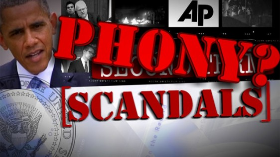
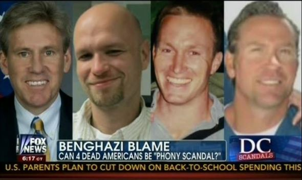
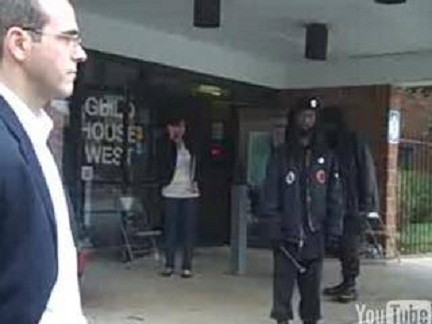
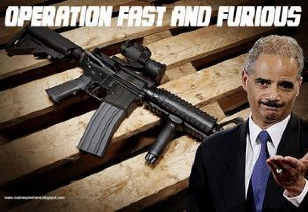
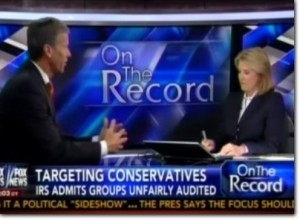
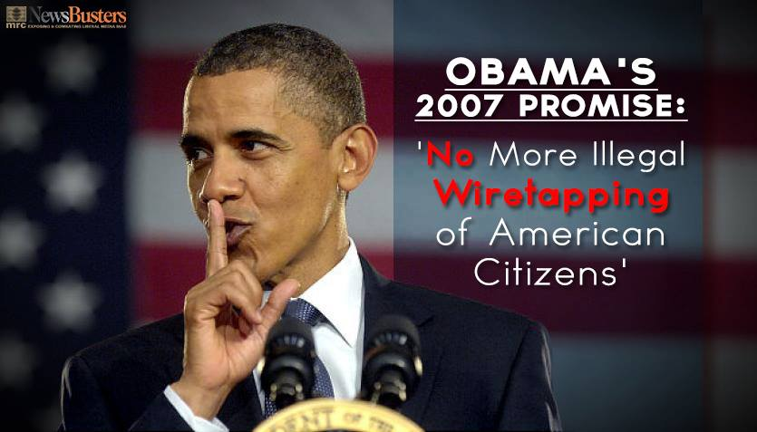

|
 |
 |
|
 Last week (the week of July 14, 2013) President Barack Hussein Obama, in a long rambling speech, spoke of how upset he was that the country had gotten off-track as he termed it, and was too focused on what he called, "phony scandals," to address what he deemed were the real issues facing the nation. So, I thought I would examine and talk a little bit about Obama's belief that America has been "distracted," by these "phony," scandals. THE BENGHAZI SCANDAL
 Is one of those scandals the attack on the US consulate in Benghazi, Mr. President? Where a US Ambassador that you sent there, who had worked for your agenda in the region was killed, along with another state department employee and two former US Navy SEALS working over there on security issues? What's phony about that, Mr. President? Are they somehow not dead? Have we been lied to about their deaths? Well, actualy, yes we have, but as it turns out, the liar is you, Mr. President. You entire concocted story about an unknown and unheard of youtube video being the "cause," was absolutely and wholly phony. A video of terrible quality, that had only been viewed a few hundred times before your ambassador to Egypt called attention to it, and then your Secretary of State and you yourself followed suite. It was obviously a concerted and planned effort to shift blame. But from what Mr. President? Why did these people die? Why was the Ambassador at that consulate, so far from the major protection of the Embassy in Tripoli on that day? It was 9/11/2012, when we knew terrorists were apt to strike on the 11th anniversary of 911. Why was Ambassador Stevens at that particular consulate, where our own security advisors had been begging for beefed up security and those requests had all been denied? Why was he in the least secure portion of that country on that day? When attacked, why were the requests for support delayed and even denied? What did two former US Navy SEALS violate orders that day to try and save those people...and then die themselves? I believe when we know those answers, we will know why you lied, Mr. President. THE VOTER INTIMIDATION SCANDAL
 What about the scandals surrounding your Attorney General, Mr. President? You know, Eric Holder and the investigations into his activities? Is all of that "phony," too? The man whose own field agents, upon his taking office, delivered to him incontravertible proof of voter intimidation in Philidelphia in the 2008 election. Where New Black Panther members, dressed in military style fatigues, showed up at voting places with billy clubs and stood at the doors to said voting places and initimidated those going in and coming out. We have the videos of this Mr. President. Millions of Americans have seen them. Yet, the Attorney Genrral himself made a decision not to prosecute. Why? What is "phony" about that behavior? Try and imagine if Klu Klux Klan members showed up at voting places in Montgomery similarly dressed. What would happen? We all know what would happen, and justifiably so. Such behavior cannot for a minute be tolerated no matter who is the criminal culprit. Your attorney General violated the law, and himself obstructed justice, Mr. President. THE FAST AND FURIOUS SCANDAL
 Or how about Holder's involvement in the the Fast and Furious scandal Mr. President? Remember? Where the Department of Justice worked with the Bureau of Acohol, Tobacco, and Firearms (BATF), to knowingly and illegally transfer firearms through dealers in Arizona to known drug trafficers by the thousands. The gun dealers knew it was bad and tried to say no. Ulitmately insider officers from the BATF and the Border Patrol had to blow the whistle on this misbegotten and horrific program, particularly once American law enforcement officers began being killed by those guns. And the Attorney General then lied to Congress about it. Out and out lied...and when confronted with it, said he forgot...or that he had not read the emails sent to him. Talk about phony, Mr. President! Yes, I will tell you what is phony, Eric Holder and his sworn testimony! He should be in jail...and yet afterwards you consistantly came out and indicated the man had your full support and trust, and were even willing to extend executive priviiletge to the man. That would be obstruction, Mr. President. There are US Law Enforcement agents dead as a result of those illegal weapons, and hundreds of Mexican citizens. That's murder two, Mr. President. There's nothing "phony" about any of that, or the investigations into them and this rogue, criminal Attorney General of yours. THE IRS HARRASSEMENT SCANDAL
 What about the "phony," IRS Harrassement Scandal, Mr. President? Again we find, that the only thing really phony about that has been you and your administration's response to it. You people told us that two rogue IRS agents in Cincinnati were the source of the IRS actions targeting and harassing your political opponents, particularly Tea Party organizations and candidates in the run up to the 2012 election. We now know, of course that that was a lie. Then, it was people in the Washington DC office, un-connected with the White House. But apparently your top advisor, Valerie Jarret was involved, and your own personal legal appointee to the IRS William Wilkins was also involved in this targeting. Mr. President, it is clear that this story reaches right to your inner circle, and it also clear that you are desperate to cover it up...and so you call another very serious scandal, and egregious violation of trust and power, and the investigation of it, "phony." As the congressman could not help himself froms aying during your state of the union, Mr. President, "You lie!" THE PRESS WIRETAPPING SCANDAL
 How about the investigation into the wiretapping scandal of press personnel, Mr. President? What is phony about that? Did the Justice Department (again under Eric Holder) not tap those people? It has been shown that the affidavits seeking the warrants requesting those taps were out and out lies, Mr. President. Again, the only thing "phony" about any of it is the effort of your own people within the administration, to inact this atrocious behavior and then cover it up...and then your own attempts to deny, cover, shuck and jive, and then call the investigation into the illegal acts of your own administration, "phony!" THE PRISM CITIZEN SURVEILLANCE SCANDAL

This particular event leads to the broader PRISM debacle and scandal that Edward Snowden blew the whistle on. Funny how your campaign promise to protect and get to the bottom of any whistle blowing activity has come completely undone, huh, Mr. President? A scandle where you and this administration, aided this time by many on both sides of the aisle, have literally trampled on the US Constitution and the 4th amendment so that you can justify taking the private and personnal communications, activites, and effects of American citizens by the tens of millions in a data minig exercise that is supposedly to prevent terrorism. Well, if you have reason to believe that there is connections to terrorism or illegal activity on any individual basis, the constitution provides for you getting a warrant from a judge for that specific event based on "probable cause," of a crime for that event. This would be, and is fine. But there is no "probable cause," for taking this information for tens of millions of Americans who are committing no crime...no "blanket" warrant when there is no probable cause for each specific event.None of these scandals are "phony," Mr. President...and you know it. You, on the other hand, reveal yourself to be the phony, fraud, and flim-flam man you are with with each passing day as you pathetically try and avoid the accountability and consequences of your own actions. You have betrayed America's trust, Mr. President. You have lied, misled, falsely accused, been involved with programs that have caused the death and injury of many Americans, and tried in vain to explain all of this as some kind of "phony," attack, witch hunt, or vendetta against you. In reality the only vendetta is your own, Mr. President, against America and its traditional values and its very Constitution. It is you, who are the phony here, Presidnet Obama...Barry Soetoro, you and those abetting and supporting these atrocious actions in and by your administration. AMERICA AT THE CROSSROADS OF HISTORY |
FINE ALL-AMERICAN, LIBERTY ORIENTED BOOKS AUTHORED BY JEFF HEAD
 Dragon's Fury - World War Against America and the West: Following great success in the War on Terror, politicians and analysts alike thought that future global conflict was impossible...but they were wrong. Journey into a possible future where Islamic terrorists sharpen their horrific skills & ally with Red China. In such a future, can the U.S. & western civilization survive? |
 The Stand at Klamatjh Falls: How rural western farmers and their supporters stood up to entrenched environmentalism, activist judges, and agencies of the Federal Government in southwestern Oregon...and prevailed. |
BACK TO JEFFHEAD.COM
Copyright © 2013 by Jeff Head, All Rights Reserved